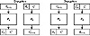
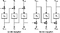

| Previous | Table of Contents | Next |
To illustrate the problem, consider a money transfer system that moves money between accounts in different banks. To make life easier for the bank’s computer systems, banks agree on a standard message format for money transfer that looks like this:
Bank One: Sending 1.5 blocks
Bank Two: Receiving 1.5 blocks
Depositor’s Name 6 blocks
Depositor’s Account 2 blocks
Amount of Deposit 1 block
A block corresponds to an 8-byte encryption block. The messages are encrypted using some block algorithm in ECB mode.

Figure 9.1 Ciphertext stealing in ECB mode.
Mallory, who is listening on the communications line between two banks, Bank of Alice and Bank of Bob, can use this information to get rich. First, he sets up his computer to record all of the encrypted messages from Bank of Alice to Bank of Bob. Then, he transfers $100 from Bank of Alice to his account in Bank of Bob. Later, he does it again. Using his computer, he examines the recorded messages looking for a pair of identical messages. These messages are the ones authorizing the $100 transfers to his account. If he finds more than one pair of identical messages (which is most likely in real life), he does another money transfer and records those results. Eventually he can isolate the message that authorized his money transaction.
Now he can insert that message into the communications link at will. Every time he sends the message to Bank of Bob, another $100 will be credited to his account. When the two banks reconcile their transfers (probably at the end of the day), they will notice the phantom transfer authorizations; but if Mallory is clever, he will have already withdrawn the money and headed for some banana republic without extradition laws. And he probably did his scam with dollar amounts far larger than $100, and with lots of different banks.
At first glance, the banks could easily prevent this by adding a timestamp to their messages.
Date/Time Stamp: 1 block
Bank One: Sending 1.5 blocks
Bank Two: Receiving 1.5 blocks
Depositor’s Name 6 blocks
Depositor’s Account 2 blocks
Amount of Deposit 1 block
Two identical messages would be easy to spot using this system. Still, using a technique called block replay, Mallory can still get rich. Figure 9.2 shows that Mallory can pick out the eight ciphertext blocks that correspond to his own name and account number: blocks 5 through 12. A diabolical laugh is appropriate at this point, because Mallory is now ready.
He intercepts random messages from Bank of Alice to Bank of Bob and replaces blocks 5 through 12 in the message with the bytes that correspond to his name and account number. Then he sends them on to Bank of Bob. He doesn’t have to know who the original depositor was; he doesn’t even have to know what the amount was (although, he could correlate the messages he doctored with the various deposits into his account and determine the encrypted blocks corresponding to some dollar amount). He simply changes the name and account numbers to his own and watches his account balance grow. (I suppose Mallory has to be careful not to modify a withdrawal message, but assume for the moment that each is a different length or something.)
Figure 9.2 Encryption blocks for an example record.
This will take longer than a day for the banks to catch. When they reconcile their transfers at the end of the day, everything will match. It probably won’t be until one of the legitimate depositors notices that his deposits are not being credited, or when someone flags unusual activity in Mallory’s account, that the banks will figure out the scam. Mallory isn’t stupid, and by then he will have closed his account, changed his name, and bought a villa in Argentina.
Banks can minimize the problem by changing their keys frequently, but this only means that Mallory is going to have to work more quickly. Adding a MAC, however, will also solve the problem. Even so, this is a fundamental problem with ECB mode. Mallory can remove, repeat, or interchange blocks at will. The solution is a technique called chaining.
Chaining adds a feedback mechanism to a block cipher: The results of the encryption of previous blocks are fed back into the encryption of the current block. In other words, each block is used to modify the encryption of the next block. Each ciphertext block is dependent not just on the plaintext block that generated it but on all the previous plaintext blocks.
In cipher block chaining (CBC) mode, the plaintext is XORed with the previous ciphertext block before it is encrypted. Figure 9.3a shows CBC encryption in action. After a plaintext block is encrypted, the resulting ciphertext is also stored in a feedback register. Before the next plaintext block is encrypted, it is XORed with the feedback register to become the next input to the encrypting routine. The resulting ciphertext is again stored in the feedback register, to be XORed with the next plaintext block, and so on until the end of the message. The encryption of each block depends on all the previous blocks.
Decryption is just as straightforward (see Figure 9.3b). A ciphertext block is decrypted normally and also saved in a feedback register. After the next block is decrypted, it is XORed with the results of the feedback register. Then the next ciphertext block is stored in the feedback register, and so on, until the end of the message.
Mathematically, this looks like:

Figure 9.3 Cipher block chaining mode.
Initialization Vector
CBC mode forces identical plaintext blocks to encrypt to different ciphertext blocks only when some previous plaintext block is different. Two identical messages will still encrypt to the same ciphertext. Even worse, two messages that begin the same will encrypt in the same way up to the first difference.
| Previous | Table of Contents | Next |
){kind=link}
){kind=link}
){kind=link}
){kind=link}
){kind=link}
){kind=link}